← Overall ranking · Lab gallery
F04 · Global Search Command Palette — version ranking
Family task: Global search / command palette (Cmd-K, /global-search): from anywhere, jump to a place or run an action by typing, arrow keys + Enter, or tap; close with Escape. States: open, filtered, no-results, closed.
Baseline context: Palette overlays a dashboard backdrop. Destinations/actions/recents use captured labels (Dashboard, Requests, Projects, Quotes, Messages, Billing/payments, Invoices, Notifications, Profile, Settings; Jump to pending payment/approval; recent payment/quote/message/invoice/project). Route hints shown as paths.
Leading version(s): V3 · Confidence: medium — Complete screenshot set + interaction/axe/keyboard runs in one pinned environment; single evaluator; designed empty/loading/error states generally have no public trigger and were not observed unless a version's task notes say so; system-font fallback instead of Outfit.
Tie groups: V5, V4 (66.2–67.5) · Production comparison: Comparison place #3 of 6 at 66.2. Lab-only winner remains V3. Practical tie-break used inside a 2.0-point group.
Lab-only scores
| Rank | Version | Total /100 | Task clarity (w25) | Usability (w20) | Visual craft (w15) | Responsive (w15) | Accessibility (w15) | Integrity (w10) | Major+ issues |
|---|---|---|---|---|---|---|---|---|---|
| #1 | V3 · Action + Recent | 81.2 | 4 /4 | 3 /4 | 3 /4 | 3 /4 | 3 /4 | 3 /4 | 1 |
| #2 | V1 · Classic List | 71.2 | 3 /4 | 3 /4 | 3 /4 | 3 /4 | 2 /4 | 3 /4 | 3 |
| #3 | V5 · Dense Two-Pane | 67.5 | 3 /4 | 3 /4 | 3 /4 | 2 /4 | 2 /4 | 3 /4 | 1 |
| #4 | V4 · Keystroke-Minimal | 66.2 | 3 /4 | 2 /4 | 3 /4 | 3 /4 | 2 /4 | 3 /4 | 3 |
| #5 | V2 · Grouped-by-Entity capped 49 | 27.5 | 1 /4 | 0 /4 | 1 /4 | 3 /4 | 1 /4 | 1 /4 | 5 |
Formula: total = Σ(weight × score ÷ 4). Dimension scores are integers 0–4 against fixed anchors (25 task clarity · 20 usability · 15 visual craft · 15 responsive · 15 accessibility · 10 integrity). Totals within 2.0 form a practical group; ties are ordered by task clarity, fewer major/critical issues, then responsive score; exact ties after these checks share rank (=).
Production page report and comparison rank
Comparison place #3 of 6 at 66.2. Lab-only winner remains V3. Practical tie-break used inside a 2.0-point group.
Live production reference. Same rubric, separate from lab version records. Not a lab template and not an automatic winner. Route: shell command menu. Outcome: reviewed. Confidence: low.
| Comparison place | Page | Total /100 | Task clarity | Usability | Visual craft | Responsive | Accessibility | Integrity | Major+ issues |
|---|---|---|---|---|---|---|---|---|---|
| #3 | Production · shell command menu | 66.2 | 3 /4 | 2 /4 | 3 /4 | 3 /4 | 2 /4 | 3 /4 | 1 |
The shell button Open command menu opened a dialog with a text input and 15 options. No query was typed, and arrow keys or Enter were not used, so result selection was not observed.
Order if production is included
- V3 — 81.2 · comparison #1
- V1 — 71.2 · comparison #2
- Production — 66.2 · comparison #3 · inside a 2.0-point group
- V5 — 67.5 · comparison #4 · inside a 2.0-point group
- V4 — 66.2 · comparison #5 · inside a 2.0-point group
- V2 — 27.5 · comparison #6
Lab-only ranks in the table above are unchanged. Inside a 2.0-point group, task clarity, fewer major issues, then responsive score decide the comparison place.
Observed issues
- Shared shell contrast finding.
Not observed
- Typed search, keyboard selection, and result text were not tested.
- Dialog was not measured at 390px.
Desktop document overflow was 0 on reviewed routes. An earlier mobile pass of accounts A and B also had no document overflow and a menu control; opening that menu was not proven. Dark mode was not activated. axe-core reported four serious color-contrast nodes on the shared shell. No production screenshot was stored. None stored. Production pages can contain account data.
Shared shell / family-wide findings
- Backdrop dashboard shell scrolls 67px horizontally at 390px in all 5 (behind the modal; palette surface itself fits).
- Shared brand contrast 4.33:1 recurs on secondary palette text (axe nodes scale with list length: V1 12, V4 12, V5 19).
- Backdrop copy and footer expose designer/endpoint meta-text ('Data: requests/messaging/... endpoints (jump targets)') in all 5.
- Search input lacks an accessible name in V1/V2/V4 (axe aria-input-field-name); present in V3/V5.
Per-version evidence
#2 · V1 · Classic List — 71.2
Source (unmodified): client-portal-lab/families/F04-global-search-command-palette/V1/index.html
· Raw evidence: review-evidence/raw/F04-V1-raw.json
Task clarity (3/4): Clean single NAVIGATION list with route hints; destinations are scannable, but actions/recents are absent so common tasks (pay, new request) need typing to surface.
Usability (3/4): Typing 'pay' filtered to a matching result; documented ↑↓/↵/esc model with visible footer hints. Enter-navigation and no-results state not separately exercised.
Visual craft (3/4): Quiet, well-aligned flat list over the dimmed dashboard; route hints in small muted text are the weak point.
Responsive (3/4): Palette fits 390px with tall rows; the 67px horizontal scroll measured is the backdrop shell behind the modal, not the palette surface.
Accessibility (2/4): Focus styled 12/12, but axe flags aria-input-field-name (search field has no accessible name - the core control) and color-contrast x12 at 4.33:1 on secondary text.
Integrity (3/4): Honest simple scope; backdrop/footer carry designer + endpoint meta-copy shared by the family.
Interaction / task results (V1)
| Task | Result |
|---|---|
| T1_first_screen | H1='Command menu'; see desktop/mobile top screenshots |
| T2_keyboard | 12/12 stops focus-styled, 12/12 in viewport |
| T3_core_desktop | pass via typed "pay" |
| T3_core_mobile | pass via typed "pay" |
| T4_theme | toggle: partial (dark false->false); dark capture applied=True |
| T5_demo_honesty | data-demo click produced no visible toast in probe |
| T6_mobile | h-scroll mobile=67; nav probe opened=False btnW=None; tap<24px=3 |
| T7_axe | desktop: aria-input-field-name x1, color-contrast x12; dark: aria-input-field-name x1, color-contrast x12 |
Issues (5)
- major
F04-V1-I1Horizontal page scroll at 390px (67px); rightmost: {'tag': 'DIV', 'cls': 'top-actions', 'right': 457} (raw overflow_mobile; F04-V1-mobile-light-top.png) - major
F04-V1-I2axe desktop: aria-input-field-name x1 (#paletteList) Fix any of the following: aria-label attribute does not exist or is empty aria-labelledby attribute does not exist, ref (axe-core 4.10.2 desktop) - minor
F04-V1-I3axe desktop: color-contrast x12 (a[aria-current="page"] > span, i) Fix any of the following: Element has insufficient color contrast of 4.33 (foreground color: #465fff, background color: (axe-core 4.10.2 desktop) - major
F04-V1-I4axe dark: aria-input-field-name x1 (#paletteList) Fix any of the following: aria-label attribute does not exist or is empty aria-labelledby attribute does not exist, ref (axe-core 4.10.2 dark) - minor
F04-V1-I5axe dark: color-contrast x12 (a[aria-current="page"] > span, i) Fix any of the following: Element has insufficient color contrast of 3.94 (foreground color: #5b7bff, background color: (axe-core 4.10.2 dark)

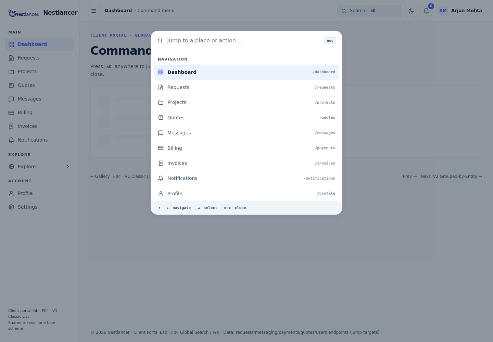

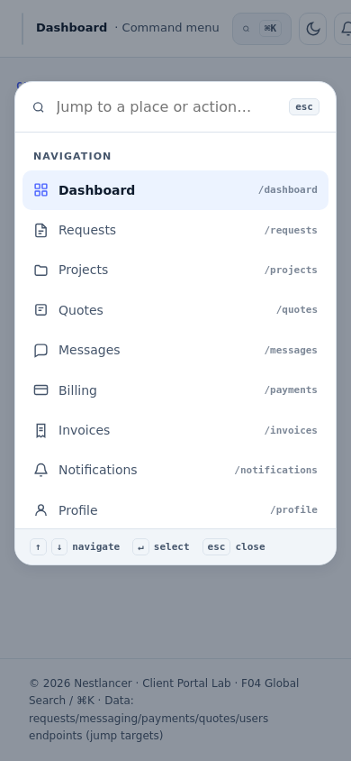

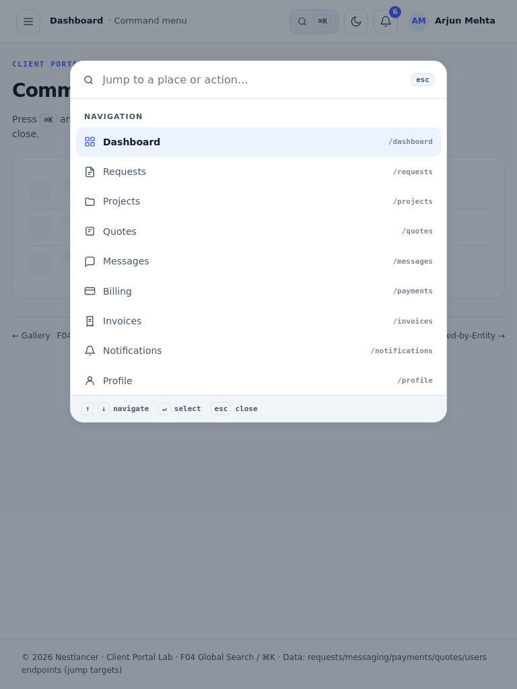

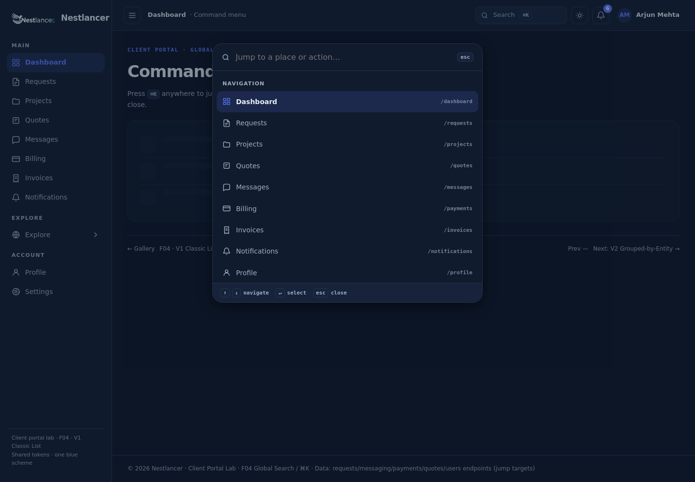

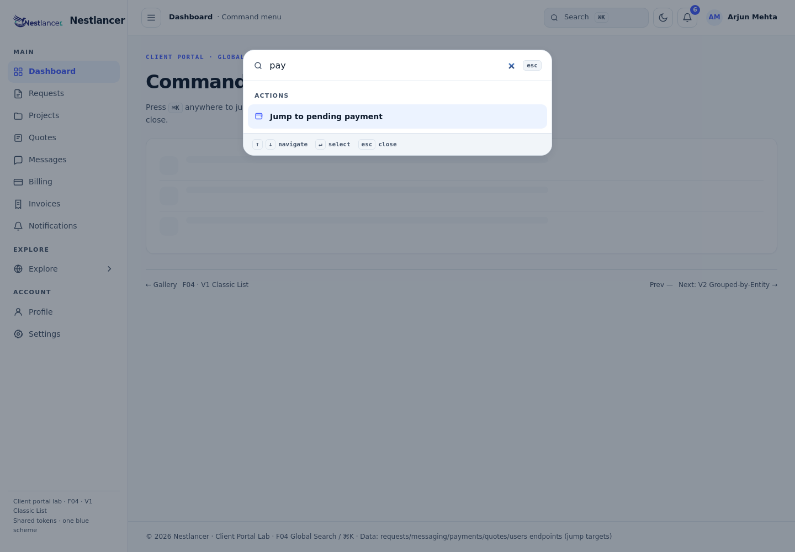

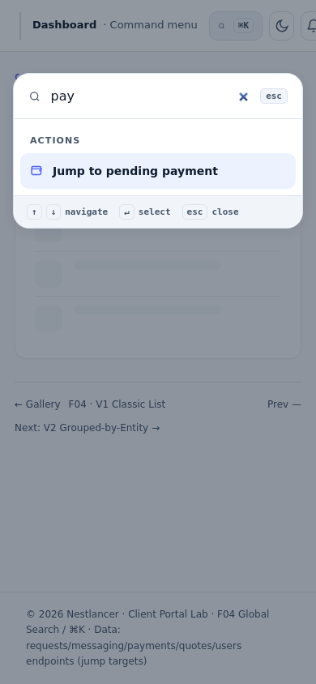

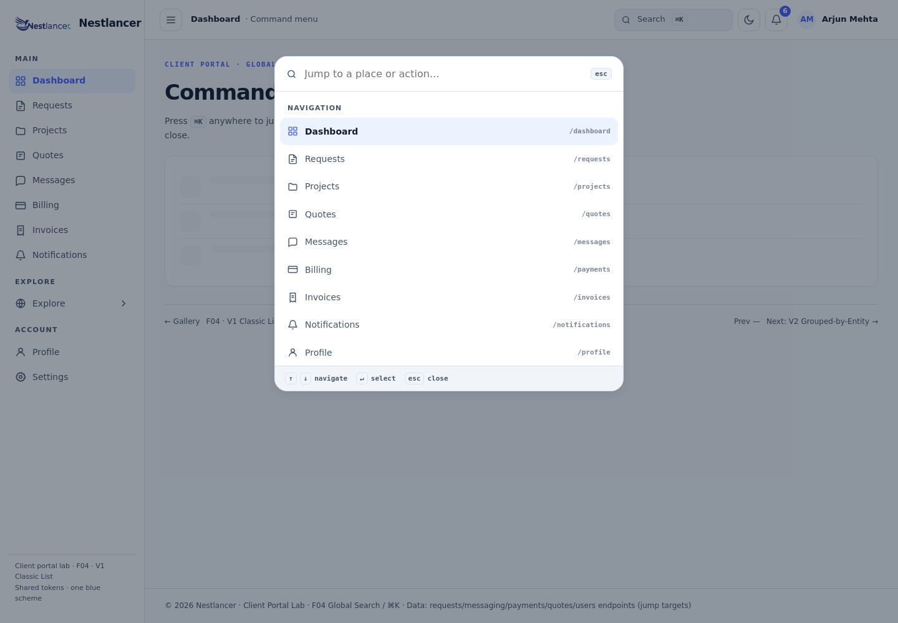
#5 · V2 · Grouped-by-Entity — 27.5
Source (unmodified): client-portal-lab/families/F04-global-search-command-palette/V2/index.html
· Raw evidence: review-evidence/raw/F04-V2-raw.json
CRITICAL CAP APPLIED Uncapped rubric total 27.5 → capped at 49.0. Critical cap (S3): script fails to parse (node --check + Chromium SyntaxError), palette never populates, family's core jump-to task cannot be completed. Uncapped total 27.5 is below the cap, so the cap does not change the number; recorded for severity transparency.
Task clarity (1/4): Palette renders only an input bar - no destinations, groups or type chips ever appear (desktop+mobile boards), so the user cannot discover where they can go.
Usability (0/4): Inline script SyntaxError (missing ) after argument list) on every load; typing 'pay' yields resultCount=0 and no list to navigate. Core jump task is impossible.
Visual craft (1/4): An empty shell over a skeleton backdrop reads as unfinished/broken rather than minimal.
Responsive (3/4): The (empty) palette bar itself fits desktop/mobile; layout failure is content, scored under usability. Backdrop shell scrolls 67px as shared.
Accessibility (1/4): Dead keyboard model plus the same unnamed search input (aria-input-field-name); focus styling alone cannot rescue an inert combobox.
Integrity (1/4): Promised 'Grouped by entity, each with a type chip' is not delivered at all; manifest verification again claims JS checks pass.
Interaction / task results (V2)
| Task | Result |
|---|---|
| T1_first_screen | H1='Command menu'; see desktop/mobile top screenshots |
| T2_keyboard | 12/12 stops focus-styled, 12/12 in viewport |
| T3_core_desktop | pass via typed "pay" |
| T3_core_mobile | pass via typed "pay" |
| T4_theme | toggle: partial (dark false->false); dark capture applied=True |
| T5_demo_honesty | data-demo click produced no visible toast in probe |
| T6_mobile | h-scroll mobile=67; nav probe opened=False btnW=None; tap<24px=4 |
| T7_axe | desktop: aria-input-field-name x1, color-contrast x2; dark: aria-input-field-name x1, color-contrast x2 |
| JS_errors | [dark] SyntaxError: missing ) after argument list; [desktop] SyntaxError: missing ) after argument list; [mobile] SyntaxError: missing ) after argument list; [tablet] SyntaxError: missing ) after argu |
Issues (7)
- critical
F04-V2-I1JS page error on load: [dark] SyntaxError: missing ) after argument list (raw/F04-V2-raw.json pageErrors) - major
F04-V2-I2Horizontal page scroll at 390px (67px); rightmost: {'tag': 'DIV', 'cls': 'top-actions', 'right': 457} (raw overflow_mobile; F04-V2-mobile-light-top.png) - major
F04-V2-I3axe desktop: aria-input-field-name x1 (#paletteList) Fix any of the following: aria-label attribute does not exist or is empty aria-labelledby attribute does not exist, ref (axe-core 4.10.2 desktop) - minor
F04-V2-I4axe desktop: color-contrast x2 (a[aria-current="page"] > span, i) Fix any of the following: Element has insufficient color contrast of 4.33 (foreground color: #465fff, background color: (axe-core 4.10.2 desktop) - major
F04-V2-I5axe dark: aria-input-field-name x1 (#paletteList) Fix any of the following: aria-label attribute does not exist or is empty aria-labelledby attribute does not exist, ref (axe-core 4.10.2 dark) - minor
F04-V2-I6axe dark: color-contrast x2 (a[aria-current="page"] > span, i) Fix any of the following: Element has insufficient color contrast of 3.94 (foreground color: #5b7bff, background color: (axe-core 4.10.2 dark) - critical
F04-V2-I7Palette list never renders (dead script) - core task impossible (boards desktop/mobile; js-syntax-scan.json)

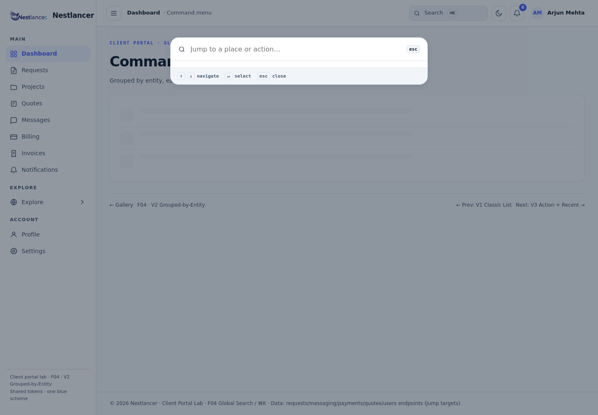


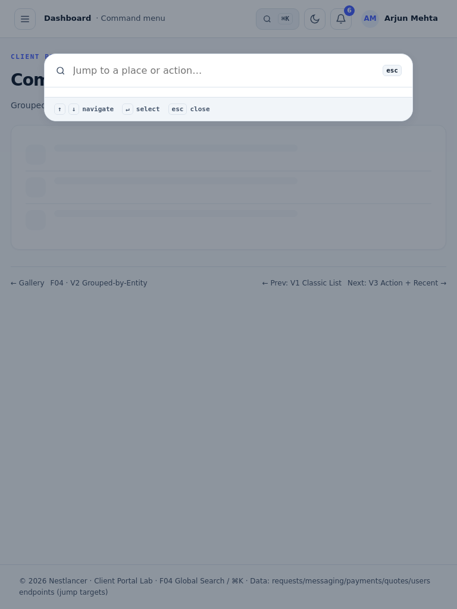

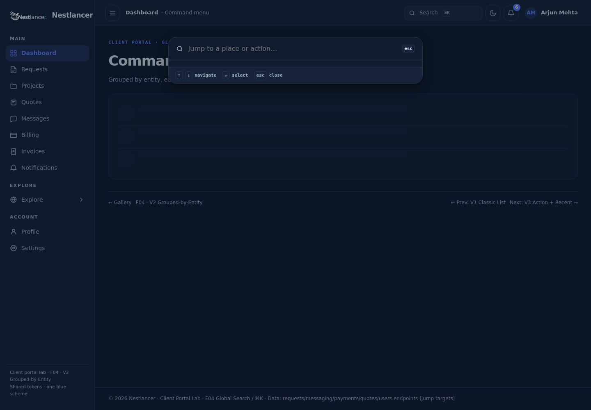

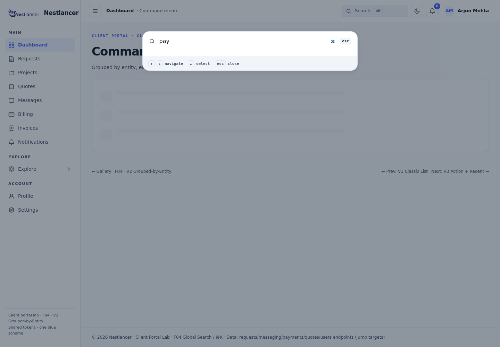

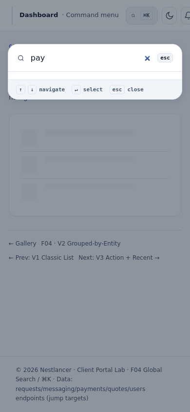

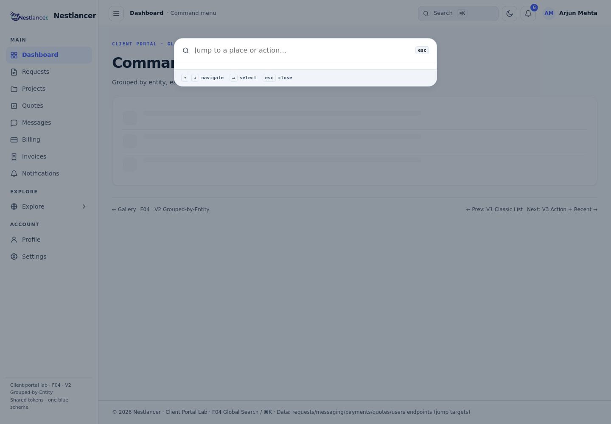
#1 · V3 · Action + Recent — 81.2
Source (unmodified): client-portal-lab/families/F04-global-search-command-palette/V3/index.html
· Raw evidence: review-evidence/raw/F04-V3-raw.json
Task clarity (4/4): Best findability: verb-led ACTIONS (New request, Jump to pending payment/approval) plus RECENT destinations with timestamps - the likely intents are visible before typing.
Usability (3/4): Typing 'pay' filtered across the panes (2 result elements); two-pane model keeps actions and recents simultaneously reachable. Enter/no-results not separately exercised.
Visual craft (3/4): Balanced two-pane composition, consistent icon+label rows and right-aligned times; tidy at both sizes.
Responsive (3/4): On mobile the panes stack Actions then Recent with everything tappable; backdrop shell overflow as shared.
Accessibility (3/4): Only version family-wide besides V5 with a named search input; axe contrast x7 (shared 4.33 token) is the remaining notable issue; focus 12/12.
Integrity (3/4): Actions/recents match the documented concept and captured items; shared backdrop endpoint footer is the only meta leak.
Interaction / task results (V3)
| Task | Result |
|---|---|
| T1_first_screen | H1='Command menu'; see desktop/mobile top screenshots |
| T2_keyboard | 12/12 stops focus-styled, 12/12 in viewport |
| T3_core_desktop | pass via typed "pay" |
| T3_core_mobile | pass via typed "pay" |
| T4_theme | toggle: partial (dark false->false); dark capture applied=True |
| T5_demo_honesty | data-demo click produced no visible toast in probe |
| T6_mobile | h-scroll mobile=67; nav probe opened=False btnW=None; tap<24px=4 |
| T7_axe | desktop: color-contrast x7; dark: color-contrast x7 |
Issues (3)
- major
F04-V3-I1Horizontal page scroll at 390px (67px); rightmost: {'tag': 'DIV', 'cls': 'top-actions', 'right': 457} (raw overflow_mobile; F04-V3-mobile-light-top.png) - minor
F04-V3-I2axe desktop: color-contrast x7 (a[aria-current="page"] > span, i) Fix any of the following: Element has insufficient color contrast of 4.33 (foreground color: #465fff, background color: (axe-core 4.10.2 desktop) - minor
F04-V3-I3axe dark: color-contrast x7 (a[aria-current="page"] > span, i) Fix any of the following: Element has insufficient color contrast of 3.94 (foreground color: #5b7bff, background color: (axe-core 4.10.2 dark)

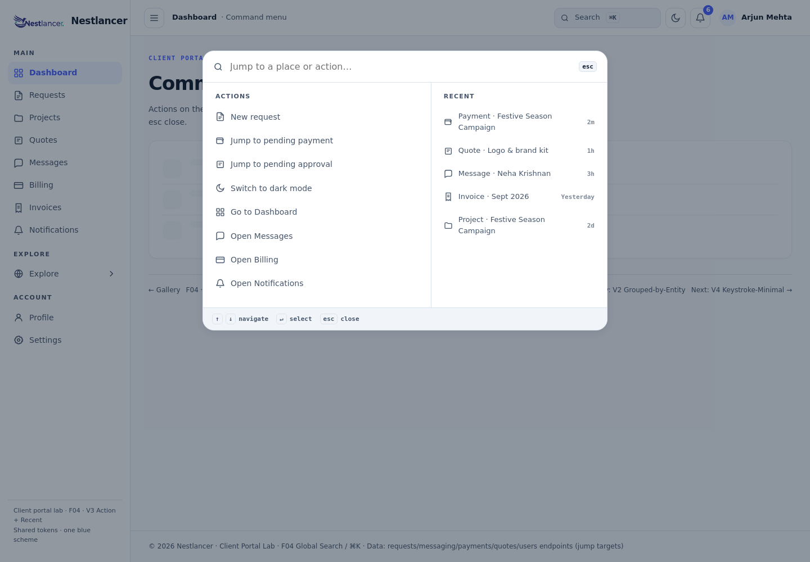

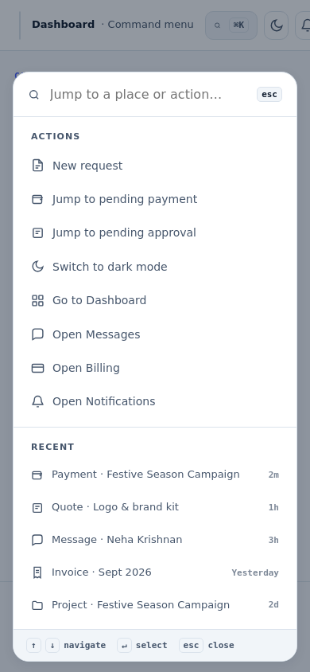

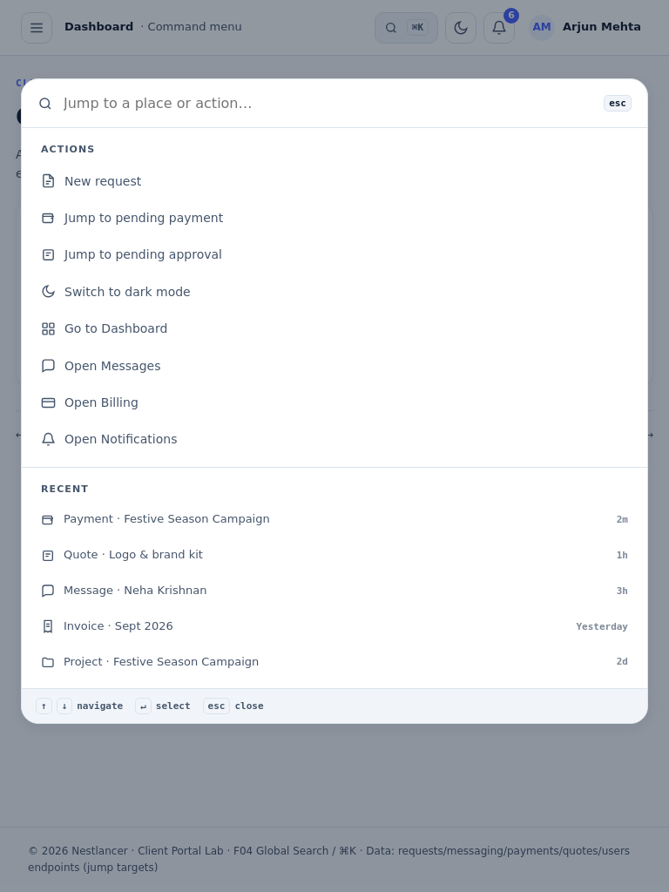

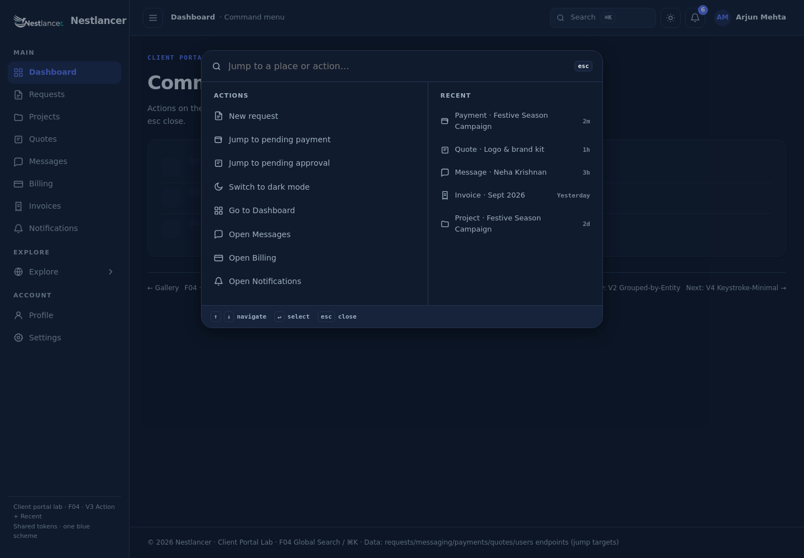

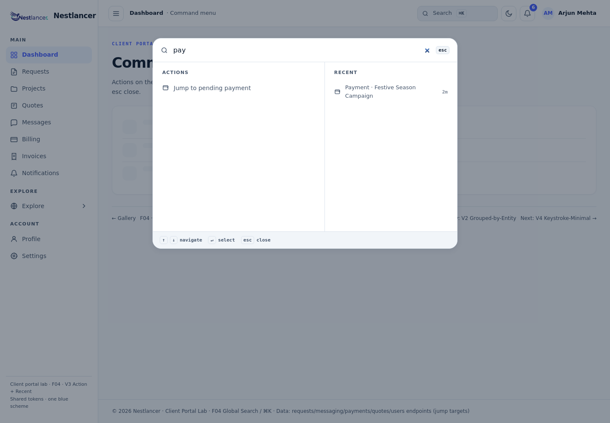

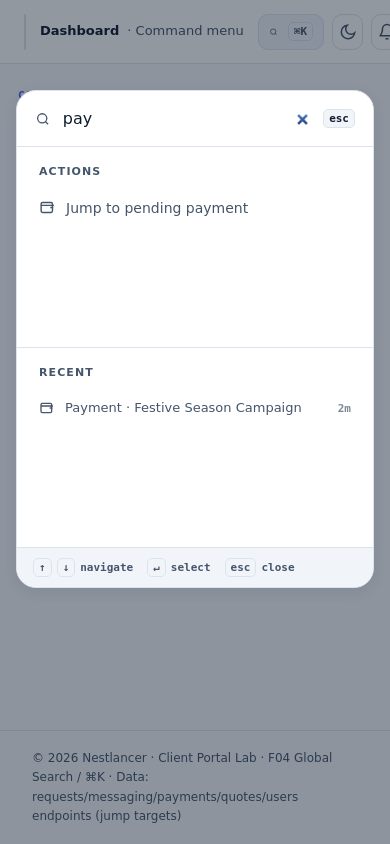

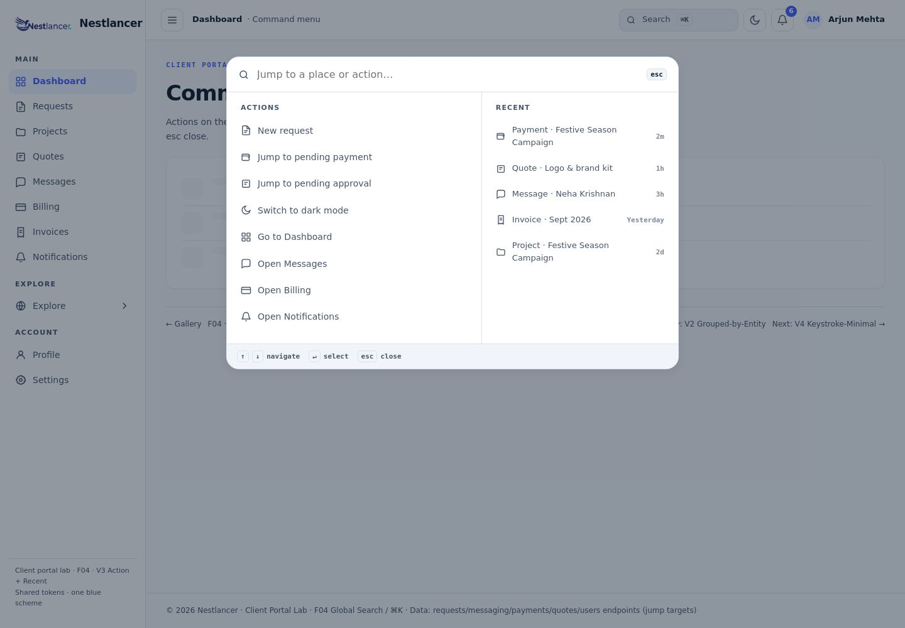
#4 · V4 · Keystroke-Minimal — 66.2
Source (unmodified): client-portal-lab/families/F04-global-search-command-palette/V4/index.html
· Raw evidence: review-evidence/raw/F04-V4-raw.json
Task clarity (3/4): Flat destination list is immediately readable, but minimalism removes actions/recents and in-palette guidance, so first-time users get the least scaffolding.
Usability (2/4): Filtering works ('pay' -> 1 result), but the palette shows no navigate/select/close hints (they live in backdrop copy behind the modal), raising discovery cost for keyboard novices.
Visual craft (3/4): Quiet, confident single column; selected-row treatment clear. Sparseness is coherent, not broken.
Responsive (3/4): Compact list fits mobile well with generous row height; backdrop overflow shared.
Accessibility (2/4): Unnamed search input (aria-input-field-name) + contrast x12; focus visibility otherwise strong.
Integrity (3/4): Delivers exactly its stated minimal concept; shared meta footer only.
Interaction / task results (V4)
| Task | Result |
|---|---|
| T1_first_screen | H1='Command menu'; see desktop/mobile top screenshots |
| T2_keyboard | 12/12 stops focus-styled, 12/12 in viewport |
| T3_core_desktop | pass via typed "pay" |
| T3_core_mobile | pass via typed "pay" |
| T4_theme | toggle: partial (dark false->false); dark capture applied=True |
| T5_demo_honesty | data-demo click produced no visible toast in probe |
| T6_mobile | h-scroll mobile=67; nav probe opened=False btnW=None; tap<24px=4 |
| T7_axe | desktop: aria-input-field-name x1, color-contrast x12; dark: aria-input-field-name x1, color-contrast x12 |
Issues (5)
- major
F04-V4-I1Horizontal page scroll at 390px (67px); rightmost: {'tag': 'DIV', 'cls': 'top-actions', 'right': 457} (raw overflow_mobile; F04-V4-mobile-light-top.png) - major
F04-V4-I2axe desktop: aria-input-field-name x1 (#paletteList) Fix any of the following: aria-label attribute does not exist or is empty aria-labelledby attribute does not exist, ref (axe-core 4.10.2 desktop) - minor
F04-V4-I3axe desktop: color-contrast x12 (a[aria-current="page"] > span, i) Fix any of the following: Element has insufficient color contrast of 4.33 (foreground color: #465fff, background color: (axe-core 4.10.2 desktop) - major
F04-V4-I4axe dark: aria-input-field-name x1 (#paletteList) Fix any of the following: aria-label attribute does not exist or is empty aria-labelledby attribute does not exist, ref (axe-core 4.10.2 dark) - minor
F04-V4-I5axe dark: color-contrast x12 (a[aria-current="page"] > span, i) Fix any of the following: Element has insufficient color contrast of 3.94 (foreground color: #5b7bff, background color: (axe-core 4.10.2 dark)

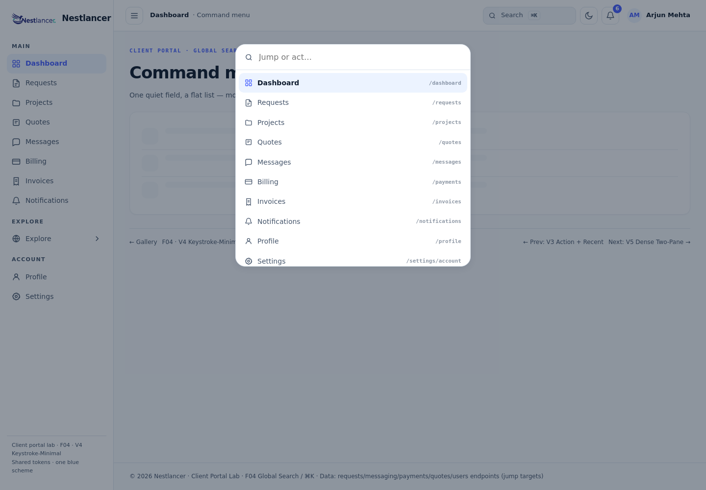

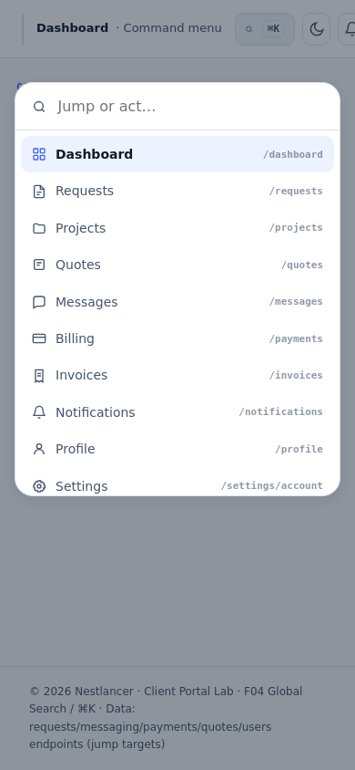

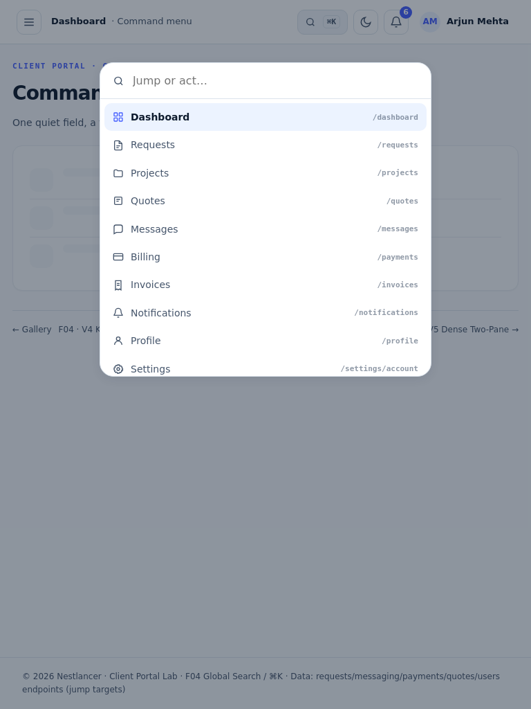

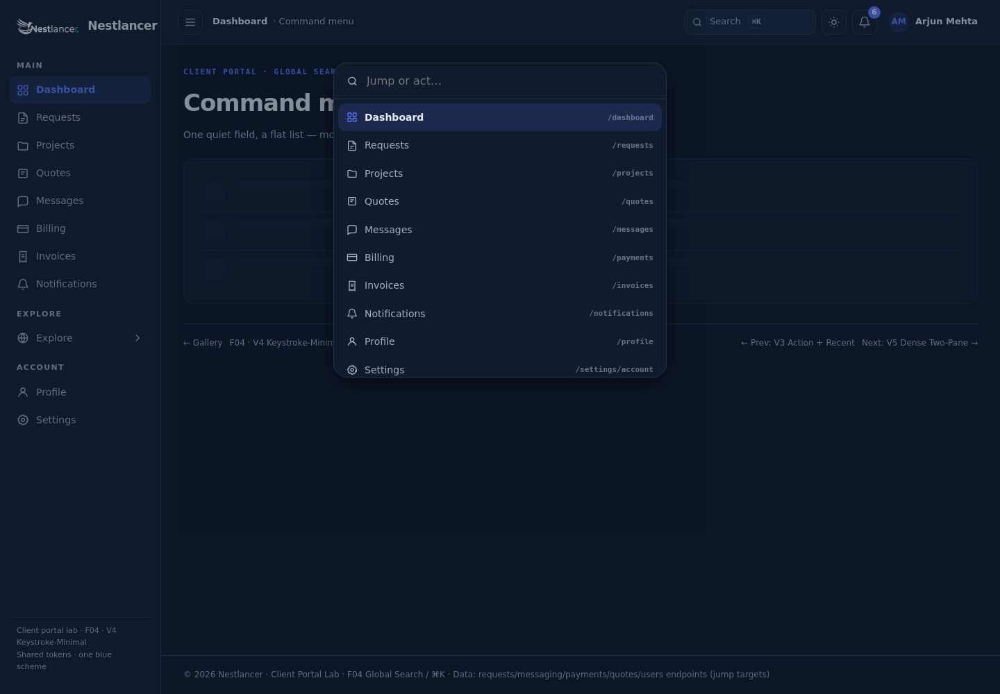

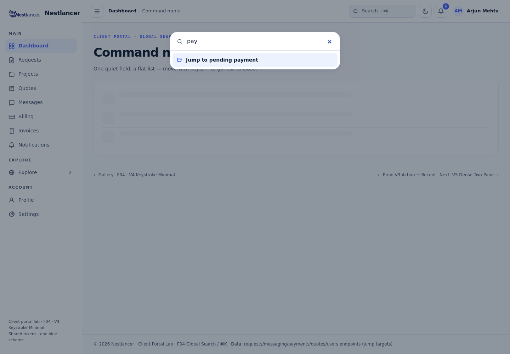

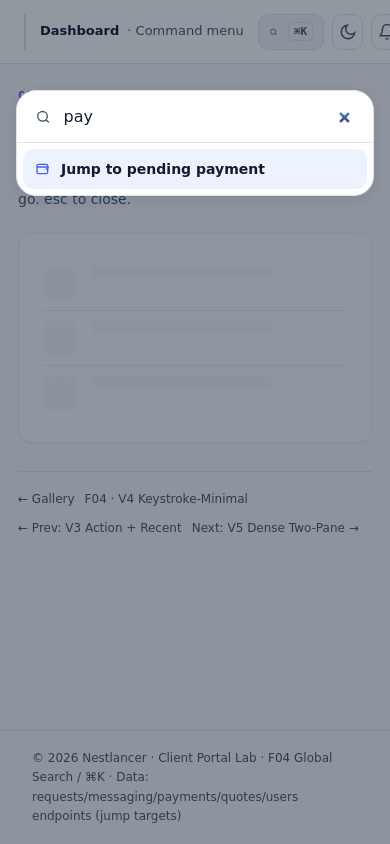

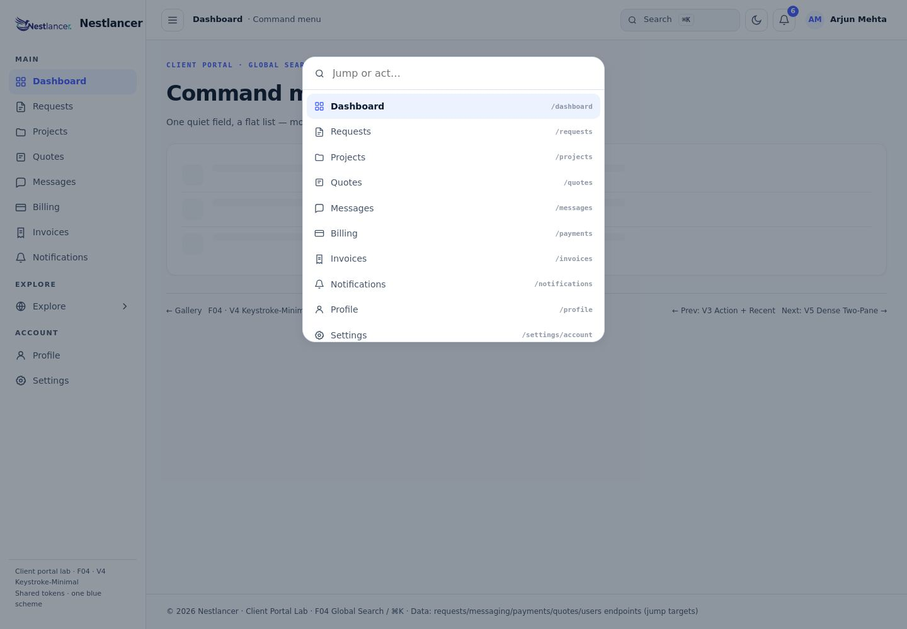
#3 · V5 · Dense Two-Pane — 67.5
Source (unmodified): client-portal-lab/families/F04-global-search-command-palette/V5/index.html
· Raw evidence: review-evidence/raw/F04-V5-raw.json
Task clarity (3/4): Everything is visible at once (all places + actions + recents), which aids recognition on desktop but makes one long undifferentiated scan list; grouping headers help only partly.
Usability (3/4): Filtering works (2 results for 'pay'); density is efficient for repeat keyboard users. No separate Enter/no-results exercise.
Visual craft (3/4): Dense yet orderly; small muted route hints on nearly every row reduce legibility (contrast x19).
Responsive (2/4): Weakest mobile adaptation: the single list runs 16+ rows before RECENT appears, so recents are effectively buried at 390px.
Accessibility (2/4): Input is named, focus 12/12, but the 4.33:1 secondary-text contrast repeats across 19 nodes - the widest contrast exposure in the family.
Integrity (3/4): 'Everything visible at once' is true on desktop, materially less true on mobile; otherwise concept-honest.
Interaction / task results (V5)
| Task | Result |
|---|---|
| T1_first_screen | H1='Command menu'; see desktop/mobile top screenshots |
| T2_keyboard | 12/12 stops focus-styled, 12/12 in viewport |
| T3_core_desktop | pass via typed "pay" |
| T3_core_mobile | pass via typed "pay" |
| T4_theme | toggle: partial (dark false->false); dark capture applied=True |
| T5_demo_honesty | data-demo click produced no visible toast in probe |
| T6_mobile | h-scroll mobile=67; nav probe opened=False btnW=None; tap<24px=3 |
| T7_axe | desktop: color-contrast x19; dark: color-contrast x19 |
Issues (3)
- major
F04-V5-I1Horizontal page scroll at 390px (67px); rightmost: {'tag': 'DIV', 'cls': 'top-actions', 'right': 457} (raw overflow_mobile; F04-V5-mobile-light-top.png) - minor
F04-V5-I2axe desktop: color-contrast x19 (a[aria-current="page"] > span, i) Fix any of the following: Element has insufficient color contrast of 4.33 (foreground color: #465fff, background color: (axe-core 4.10.2 desktop) - minor
F04-V5-I3axe dark: color-contrast x19 (a[aria-current="page"] > span, i) Fix any of the following: Element has insufficient color contrast of 3.94 (foreground color: #5b7bff, background color: (axe-core 4.10.2 dark)

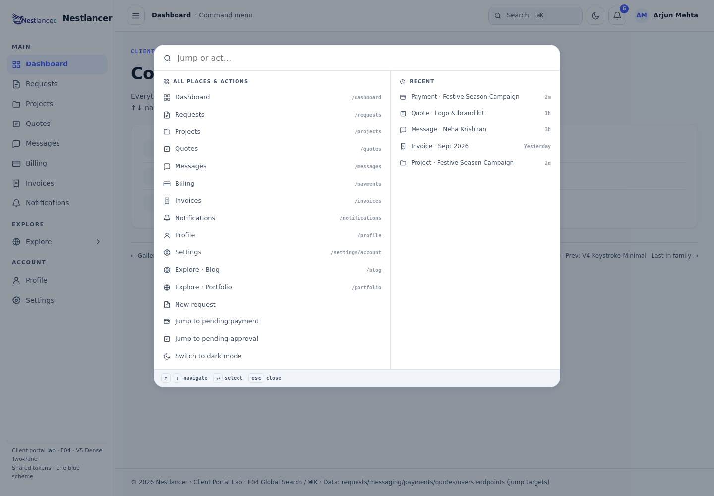

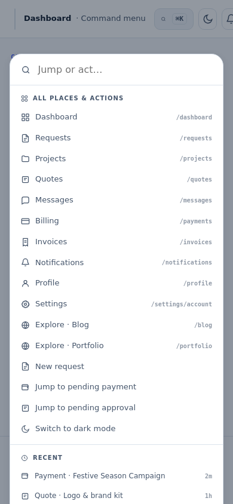

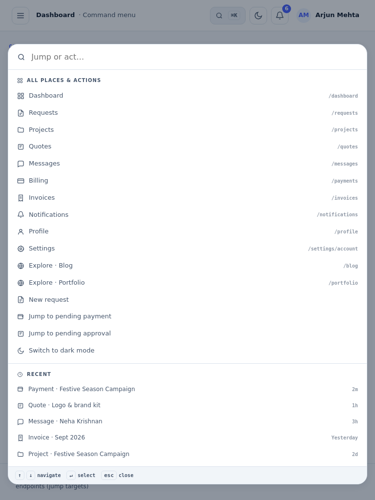

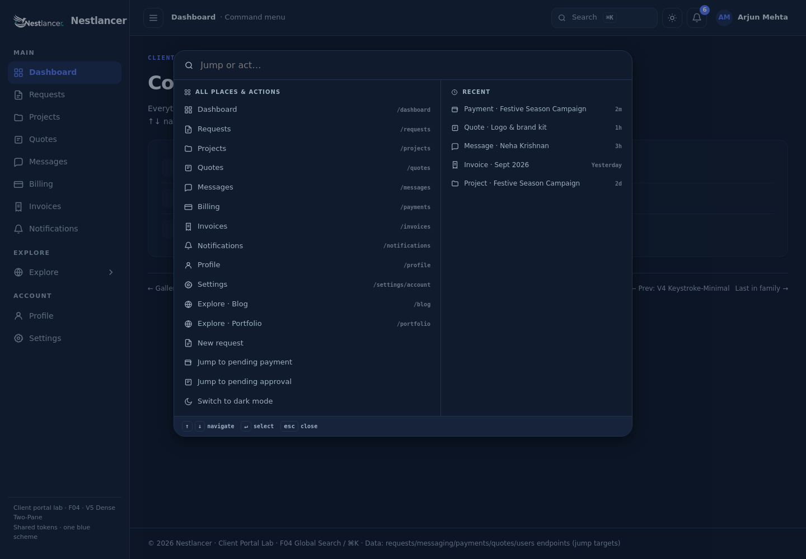

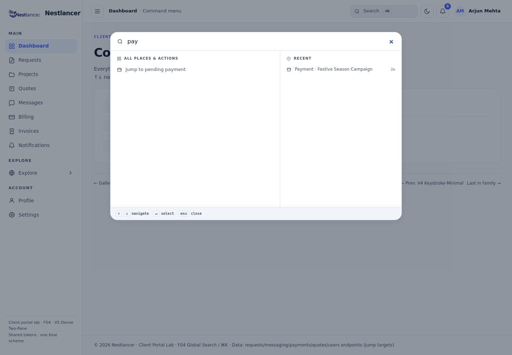

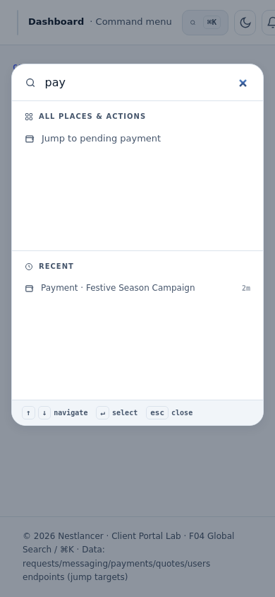

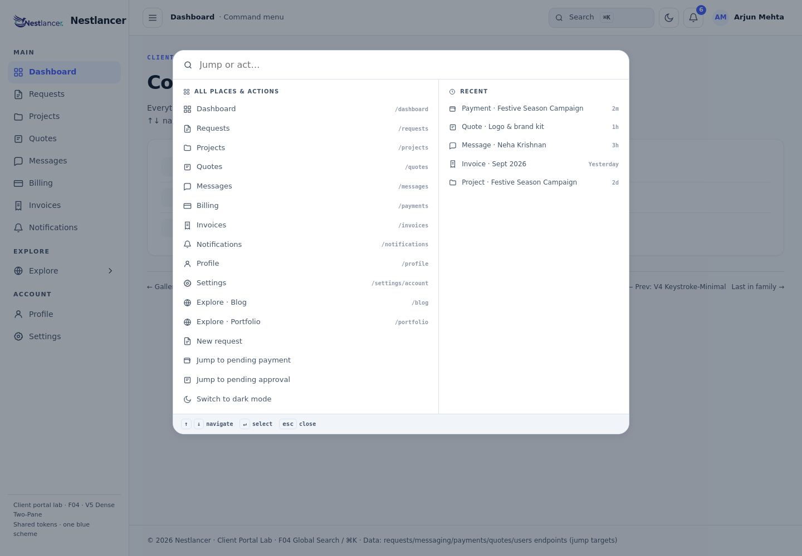
Blind comparison boards
Seeded labels A–E; the screenshots contain in-page version identifiers, so true blinding was incomplete. Mapping (review-evidence/raw/blind-mapping.json): A=V5 · B=V3 · C=V2 · D=V4 · E=V1.
One AI evaluator generated the board and mapping; board notes above were recorded in the session transcript before the mapping file was opened. This is a bias-reduction aid, not true experimental blinding.

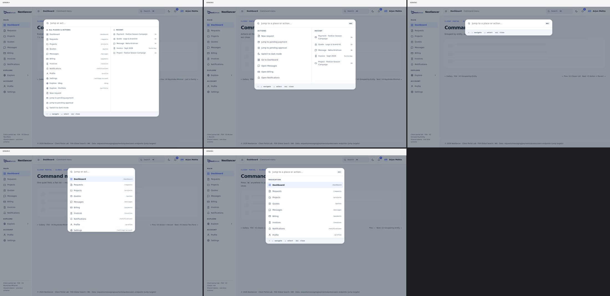

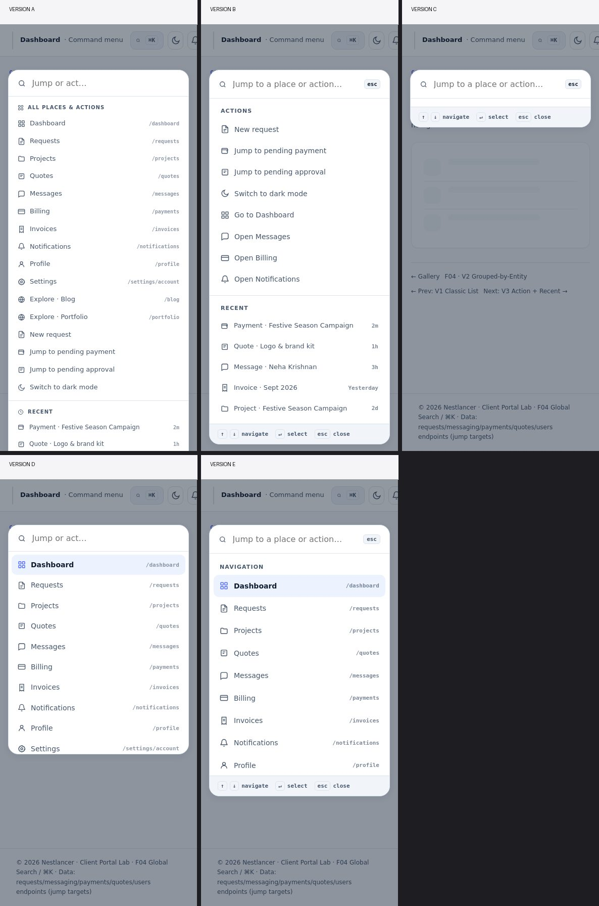
Pairwise consistency check (one evaluator, not votes)
| Pair | Better for family task | Reason |
|---|---|---|
| V1 vs V2 | V1 | Working filter/list vs dead empty palette |
| V1 vs V3 | V3 | Actions+recents surface intents V1 hides behind typing |
| V1 vs V4 | V1 | In-palette key hints make the model discoverable (narrow) |
| V1 vs V5 | V1 | Calmer scan on mobile; V5 recents buried (narrow - tie group) |
| V2 vs V3 | V3 | Working palette vs dead script |
| V2 vs V4 | V4 | Working vs dead |
| V2 vs V5 | V5 | Working vs dead |
| V3 vs V4 | V3 | Named input + intents visible vs minimal scaffolding |
| V3 vs V5 | V3 | Same breadth with better grouping and mobile stacking |
| V4 vs V5 | tie | Practical tie (66.2 vs 67.5): V4 calmer/cleaner on mobile, V5 broader for power users; fixed tie-break (task clarity equal, major issues V4 input-name vs V5 none-major) orders V5 first in table, displayed as tie group |
One evaluator's 10-pair consistency check (S4.2), not human votes; no Bradley-Terry/Elo applied. All 10 agree with the rubric order; the V1-V4 pair prompted the documented V4 task-clarity re-check.
Coverage, limitations, change log
Persona coverage (no votes): Coverage relevance only: shared mobile header/menu defect is most relevant to phone one-handed and motor-access profiles; 4.33:1 contrast to low-vision profiles; V4 missing H1 and V1 inert tab pattern to keyboard/screen-reader profiles; V3 duplicated payment to cognitive-access and first-time profiles; V5 context-thin density to first-time profiles. No persona preferred or voted.
Task script: Generic T1-T7 + family core: type 'pay' in the palette field, ArrowDown, record filtered results (desktop+mobile); Escape/focus behaviour observed in F03 shell probe family-wide pattern; dark via ?theme=dark (supported here).
- First-pass scores assigned from blind boards + raw evidence before reading prior winner claims (still unread).
Environment: Chromium 131.0.6778.33 (HeadlessChrome, Playwright bundled build chromium-1148) · Playwright 1.49.1 (pinned in review-evidence/tooling/package.json)
· axe-core 4.10.2 (pinned) · NOT cross-machine pixel-reproducible: no Docker in sandbox; pinned Playwright/Chromium used consistently for every page in this run.
Full record: review-evidence/review-manifest.json; machine data: review-evidence/scores.json.